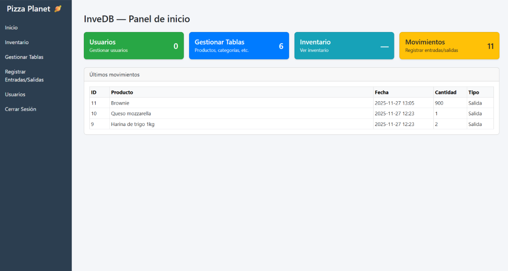
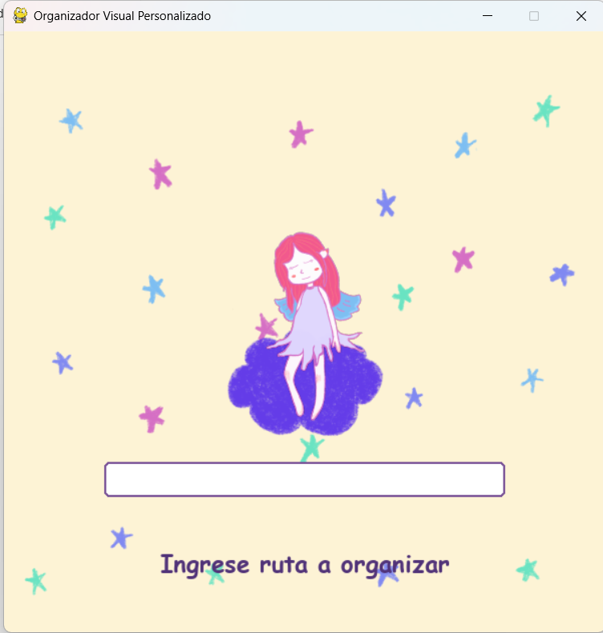
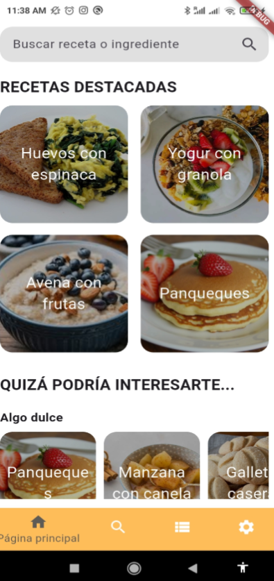

InventarioDB
Una plataforma web que ayuda en el inventario de una pizzeria.

Una plataforma web que ayuda en el inventario de una pizzeria.

Aplicación que ordena carpetas introduciendo la ruta de acceso en tiempo real (concepto ficticio).

Una aplicación móvil de recetas saludables.